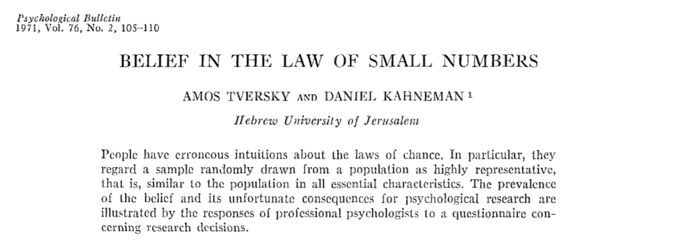
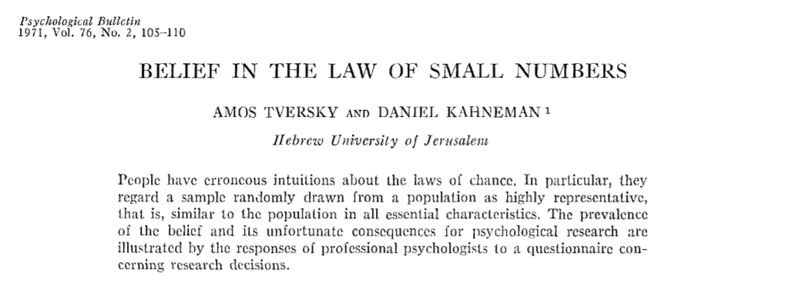

| Course | Econ 262 |
| Professor | Amit Gandhi (akgandhi@upenn.edu) |
| TA | etc |
| Lecture | Tues, Thursday 1.30-2.50 |
| Office Hours | By appointment |
| Website | marketdesign.io |
Welcome
Welcome to Market Design (Econ 262)!
The course will be taught virtually. We will use both synchronous and asynchronous channels for our course interactions.
We will meet regularly during our alloted lecture time to engage in one of 3 activities (which will be recorded for those who cannot attend live):
- Short lectures with break-out sessions
- Student presentations
- Virtual office hours for questions on material
The course website will deliver the lectures material extracted from the weekly readings. Our class canvass site will be used to deliver recorded lectures and host asynchronous class discussion.
What is Market Design?
The goal of market design is to design policies that improve the efficiency of economic decisions. An economic decision is any decision that involves trade-offs, which is synonymous with the very definition of economics as “the study of the allocation of scarce means to satisfy competing ends.” (Becker 2017)
Economic decisions are made by diverse actors in an economic system - households, firms, governments, and even the markets themselves (e.g., the invisible hand!).
An economic decision is efficient if it makes an optimal trade-off given the objectives and constraints of the decision maker.
Helping make decisions more efficient creates value, generates profits, and raises welfare. But how should such interventions be designed? This is the central problem of market design.
What is the Topic of Our Class?
Our class is focused on the problems of market design in digital environments.
Humans are increasingly making decisions in the presence of screens and devices, both at work and home. This has been especially pronounced during the last year of the pandemic where life quite literally moved online!
What is the impact of digital environments on economic decisions? Does the transition from offline to digital environment improve economic efficiency? Can digital environments be designed to enable humans to better optimize their economic decisions?
These are central questions for market design in digital environments.
A key difference between digital decisions and their offline counterparts is the role of data. A digital decision can leverage unprecedented velocity, variety, and volume of data. The proliferation of data is a product of technological advancements in data science, data engineering, data analytics, machine learning, and A.I", which generates data intelligence that is distributed to decision makers through the cloud.
A fundamental question is then:
More Data = Better Decisions?
The answer is not as straightforward as it may seem. From a purely statistical or econometric viewpoint - more data is always better - we get better parameter inferences, better predictive accuracy, and better power to test models.
However from a decision making perspective matters are less clear. The main problem is that data and A.I. - despite the hype - is not a panacea by itself. The technologies alone do not magically transform decisions. As economists are fond of saying, there is no free lunch!
Hal Varian (Chief Economist at Google and Professor at Berkeley) summarized the matter nicely in a recent interview:
I think there’s a mystical belief in the power of data. Data is like oil in one respect… namely, it needs to be refined in order to be useful. So the data itself is not the important components, the know-how to refine it into something that’s useful. It’s the same [when] we talk about oil or data – it’s just the raw material, it’s not the finished product.
In order to create value, data technologies need to be transformed into applications that solve real problems and improve economic decisions. That is, applications need to be designed to extract value from data. Without good design, we are left with an alternative possibility:
More Data =
More Complexity =
Worse Decisions!
A central problem for market design is designing digital environment to translate “more data” into “better economic decisions”..
What is our approach to the topic?
How should digital environment be designed to enable efficient economic decisions?
The first rule of good design is to know your audience. For whom are we designing? Who is the user?
Let me state the obvious answer which nevertheless has some profound implications for market design. The user is a human being!
Our approach in the class is to start with the user - the human - and understand how humans process and act upon data for economic decision making.
The interface between a human decision and the raw data in a digital environment is typically defined by a web application. The application processes, models, summarizes, and displays features of the raw data to the user.

Thus from a user perspective, effective design in digital environments requires that a market designer to do 3 things:
1. Identify an existing inefficiency in a human decision making process.
2. Improve the the decision by leveraging data, technology, and economics.
3. Influence humans to change their behavior toward the efficient outcome through a digital interface.
We can see that success in a market design project involves holistic thinking that integrates data/economic techniques with the visual elements of the digital interface, which are all tailored to the user behaviors we aim to effectuate.
This is hard! It is a domain that is still in its infancy and being developed in real time across academic, business, and government as organizations digitally transform make data more central to their operation. It is thus a course that (by design 😄) will aim to pose many more questions than necessarily answering them.
How Does this Differ from Data Science?
Whereas a data science or machine learning classes will often focus attention on elements (2) (usually substituting “better decisions” with “better predictions”) and the plethora of skills and technique involved therein, we will examine the design problem through the human touch points in (1) and (3). Our focus is thus the human-centric design of data technologies to enhance economic decisions.
The science we will apply to the question follows from the seminal work of Kahneman and Tversy (KT for short) who in 1971 began the first inquiry into the question of whether humans naturally are intuitive statisticians - e.g., do humans instinctively process data in a fashion that abides by formal statistical principles?
 

The surprising answer to the question was “no”, and led to an influential research paradigm known as “Heuristics and Biases” (H&B for short).
The crux of H&B, which is among the biggest discovery in the social and behavioral sciences of the last 50 years, is that there are robust patterns of human cognition that make humans, e.g, Homo Sapien behave differently than the rational ideal, e.g., Homo Economicus. The program spawned the field of behavioral economics and led to Kahneman being awarded the Nobel Prize for Economic Science in 2002 (Tversy sadly passed away in 1996).
Course Books
Thinking Fast and Slow

Our primary text for the class - “Thinking Fast and Slow” by Daniel Kahneman - describes the conceptual and historical backdrop behind H&B and provides the basic clues for where we can anticipate that sub-rational economic decisions will happen. Identifying these scenarios is a central part of being a market designer in the digital age - data and AI when properly employed should ameliorate these biases and improve economic efficiency.
Nudge

Identifying an inefficiency in an economic decision is one thing. Changing someone’s behavior towards a more efficient state is quite another. No one likes to be told what to do, especially from data they may not fully be aware or understand.
Perhaps the answer lies not in directing the outcome of the decision, but rather to nudge the decision maker towards the rational outcome while respecting their autonomy over the decision.
This is the key idea behind the book Nudge by Richard Thaler and Cass Sunstein. Richard Thaler is a behavioral economist who developed the first economic applications of Kahneman and Tversky’s discoveries. He was awarded the Nobel prize himself in 2017.
An implication of H&B for market design is that it is not simply what data is presented to humans, but how they are presented that affects which economic decisions are made. It implies that both the presentation of information as well as the information itself are part of the design problem. Said another way - The interface matters!
Nudge applies this fact and recognizes that interfaces (what they call choice contexts) can manipulated and hence designed to produce decisions that are more rational. Thaler and Sunstein call this type of market design choice architecture - designing the choice environment to nudge people to behave more rationally without having to make people “think” more rationally!
However the practice of designing nudges has a potential dark side - especially in digital environments. They can be used to exploit human frailties to extract profits in a way that may not be human welfare improving to the user. Of course the definition of welfare itself can be in the eye of the beholder, and the dividing line between good vs evil nudges is not always clear. We will aim to be mindful of this important complexity as we explore the topic.
Learning Objectives and Course Evaluation
There are 3 primary learning objectives in the class that set the dimensions we use for evaluation and grading.
Reading (35%)
Objective
Understand the meaning of “Heuristics and Biases” - how are economic decisions made intuitively what are the practical opportunities for market design to nudge decisions to a more efficient state.
Key Results
Read the assigned papers and book chapters according to course schedule and engage with readings both through class discussion and the Perusal platform.
Description
The primary learning experience in the course is rooted in reading the assigned book chapters and papers, and discussing them as a class. We will add a technological twist to this age old formula by adopting the Perusall application.
Perusall manages your engagement in the weekly readings. Perusall itself is based on an intelligent data technology that is aiding a key form of decision making in the classroom - student evaluations! Perusall measures engagement by your annotations in the reading, which forces you into an active reading mode through similar social forces that motivate our online media habits - it thus also embodies key features of Nudge!
We will use Perusall to manage the readings from “Thinking Fast and Slow” - which should be purchased through Perusall site. We will also use well as the articles from journals and online sources.
Class Presentation (25%)
Learning Objective
Translate the insights from the classical H&B science to a modern topic about human decisions in digital settings.
Key Results
Class presentation on a research paper assigned from literature that covers the “five main questions” to structure a summary of piece of research.
Description
Both “Thinking Fast and Slow” and “Nudge” were written before data science came of age. In fact the term “data science” itself was coined in 2008 (by D.J. Patil and Jeff Hammerbacher), the same year as Nudge was published.
Data science is in many ways represents the modern day choice architecture. Data scientist are processing, filtering, and designing displays of information that defines the context for a large variety of our economic decisions.
You will work in groups of 3 and present one paper associated to one of the cognitive “heuristics and biases” we discuss. The schedule of topics and list of potential papers are listed below.
I have chosen the papers rather intentionally to provide a current perspective on these classical challenges for economic decision making. Many of the papers are explicitly focused on the way in which heuristics and biases manifest themselves in digital environments where human attention is spent digesting data on a screen.
That said, if you have an alternative paper or topic you would rather examine, I am happy to discuss the possibility with you depending on how it fits into the syllabus.
The presentation should be roughly 15-20 mins - presented using any medium you prefer (powerpoint, google docs, latex, r markdwon etc) and should address the following issues in order:
- What is the question that the paper addresses?
- How is this question related to the ideas of our class?
- How do they go about studying this question?
- What are the primary and secondary findings?
- What are the key consequences in your opinion of the research for our understanding for market design and economic decisions in digital environments.
Final Project (40%)
Objective
Build a digital interface for influencing decision makers through literate programming.
Key Result
Groups complete their final project on a blog post that utilizes literate programming techniques and deployed live on the class blog.
Description
Literate programming is based on a text as code for influencing where code, text, and visuals are part of a single notebook that packages data and storytelling together in one medium.
Your final project builds on your class presentation. You will be asked to use the paper you studied for your presentation as the basis for a blog post that introduces the topic of the paper to a wider audience, bundles it with additional research/investigation into the topic, and argues why they should care for their economic decision making.
The blog post should be written using R markdown and can avail itself of interactive media (visualizations, animations etc) to bring the idea to life.
We will assemble all the blog entries from the class and publish a live course blog aimed at practicing data scientist looknig to make an economic impact with their work.
I will work with each group on their blog concept over the course of the semester.
Course Schedule
We reference
Papers that are assigned for group presentations are color coded according to:
Group A
or
Group B
depending on the number of group presentations scheduled.
Week 01, 01/18 - 01/22
Thurs Jan 21
Topic: Rstudio Global Conference
Register and attend any session(s) of the Rstudio global conference

Week 02, 01/25 - 01/29
Tues Jan 26
Topic: Syllabus Day
📜 Bounthavong, M. (2019). Communicating data effectively with data visualizations: Part 21. URL: https://mbounthavong.com/blog/2019/12/13/communicating-data-effectively-with-data-visualizations-part-21-examples-of-famous-and-infamous-data-visualizations-1.
Schneider, C., M. Weinmann, and J. Vom Brocke (2018). “Digital nudging: guiding online user choices through interface design”. In: Communications of the ACM 61.7, pp. 67-73. URL: https://cacm.acm.org/magazines/2018/7/229029-digital-nudging/fulltext#R25.
Thurs Jan 28
Topic: Introduction to Homo Economicus and Digital Nudges
📖 tfs (Introduction)
📖 nudge (ch. 1-2)
Week 03, 02/01 - 02/05
Tues Feb 2
Topic: Literate Programming via Rmarkdown
📜 Hohman, F., M. Conlen, J. Heer, et al. (2020). “Communicating with Interactive Articles”. In: Distill. https://distill.pub/2020/communicating-with-interactive-articles. DOI: 10.23915/distill.00028.
Thurs Feb 4
Topic: Testing Homo Economicus
📜 Athey, S. (2017). “Beyond prediction: Using big data for policy problems”. In: Science 355.6324, pp. 483-485.
Friedman, M. (1953). “The methodology of positive economics”. In: Essays in positive economics 3.3, pp. 145-178.
Week 04, 02/08 - 02/12
Tues Feb 9
Topic: The Independence or Irrelevant Alternatives
📜 Rubinstein, A. (1998). Modeling bounded rationality. MIT press. Chap. 1.
Thursday Feb 11
No Class
Week 05, 02/15 - 02/19
Tues Feb 16
Topic: Optimizing vs Satisficing
📜 Caplin, A., M. Dean, and D. Martin (2011). “Search and satisficing”. In: American Economic Review 101.7, pp. 2899-2922.
Schnabel, T., P. N. Bennett, S. T. Dumais, et al. (2016). “Using shortlists to support decision making and improve recommender system performance”. In: Proceedings of the 25th International Conference on World Wide Web. , pp. 987-997.
Thurs Feb 18
Topic: Choice Contexts
📜 Huber, J., J. W. Payne, and C. Puto (1982). “Adding asymmetrically dominated alternatives: Violations of regularity and the similarity hypothesis”. In: Journal of consumer research 9.1, pp. 90-98.
Lea, A. M. and M. J. Ryan (2015). “Irrationality in mate choice revealed by túngara frogs”. In: Science 349.6251, pp. 964-966.
Shafir, E., I. Simonson, and A. Tversky (1993). “Reason-based choice”. In: Cognition 49.1-2, pp. 11-36.
Week 06, 02/22 - 02/26
Tues Feb 23
Topic: Choice Contexts in Digital Environments
📜 Dimara, E., G. Bailly, A. Bezerianos, et al. (2018). “Mitigating the attraction effect with visualizations”. In: IEEE transactions on visualization and computer graphics 25.1, pp. 850-860.
--- (2019). “Too Many Options? Here’s a Data Visualization Technique That Can Lead to Better Decisions”. In: Kellog Insight. URL: https://insight.kellogg.northwestern.edu/article/decoy-effect-psychology-information-overload.
📜 Weinmann, M., A. Mishra, L. Kaiser, et al. (2020). “The Attraction Effect in Reward-Based Crowdfunding: Evidence from Four Experiments”. In: Available at SSRN 3630514.
Thurs Feb 25
Topic: Too Much Choice
📜 Iyengar, S. S. and E. Kamenica (2010). “Choice proliferation, simplicity seeking, and asset allocation”. In: Journal of Public Economics 94.7-8, pp. 530-539.
Iyengar, S. S. and M. R. Lepper (2000). “When choice is demotivating: Can one desire too much of a good thing?” In: Journal of personality and social psychology 79.6, p. 995.
Madrian, B. C. and D. F. Shea (2001). “The power of suggestion: Inertia in 401 (k) participation and savings behavior”. In: The Quarterly journal of economics 116.4, pp. 1149-1187.
Week 07, 03/01 - 03/05
Tues March 2
Topic: Digital Nudges
📖 nudge (ch 3,5)
📜 Bhargava, S., L. Conell-Price, R. Mason, et al. (2018). Save (d) by Design.
Thurs March 4
Topic: Dark Nudges
📜 Kresge, L. (2020). Data and Algorithms in the Workplace: A Primer on New Technologies. URL: https://laborcenter.berkeley.edu/wp-content/uploads/2020/12/Working-Paper-Data-and-Algorithms-in-the-Workplace-A-Primer-on-New-Technologies-FINAL.pdf.
Gino, F. (2017). “Uber shows how not to apply behavioral economics”. In: Harvard Business Review. URL: https://hbr-org.proxy.library.upenn.edu/2017/04/uber-shows-how-not-to-apply-behavioral-economics.
NARAYANAN, A., A. MATHUR, M. CHETTY, et al. (2020). “Dark Patterns”. In: ACM Queue. URL: https://cpb-us-w2.wpmucdn.com/voices.uchicago.edu/dist/1/2826/files/2020/12/darkpatternsqueue.pdf.
Scheiber, N. (2017). “How Uber uses psychological tricks to push its drivers’ buttons”. In: The New York Times 2. URL: https://www.nytimes.com/interactive/2017/04/02/technology/uber-drivers-psychological-tricks.html?_r=0.
Week 08, 03/08 - 03/12
Tues March 9
Topic: System 1 and System 2
📖 tfs (ch. 1-5)
Thurs March 11
Spring Break
Week 09, 03/15 - 03/19
Tues March 16
Topic: Heuristics
📖 tfs (ch. 6-9, Appendix A)
Thurs March 18
Topic: Law of Small Numbers
📖 tfs (ch 11)
📜 Chivers, T. (2019). What’s next for psychology’s embattled field of social priming. URL: https://www.nature.com/articles/d41586-019-03755-2.
Engber, D. (2016). The Irony Effect. URL: https://slate.com/technology/2016/12/kahneman-and-tversky-researched-the-science-of-error-and-still-made-errors.html.
Tversky, A. and D. Kahneman (1971). “Belief in the law of small numbers.” In: Psychological bulletin 76.2, p. 105.
Week 10, 03/22 - 03/26
Tues March 23
Topic: Law of Small Numbers + Gambler’s Fallacy
📜 Kale, A., F. Nguyen, M. Kay, et al. (2018). “Hypothetical outcome plots help untrained observers judge trends in ambiguous data”. In: IEEE transactions on visualization and computer graphics 25.1, pp. 892-902.
Thurs March 25
Topic: Anchoring
📖 tfs (ch 11)
📜 Ross, L., D. Greene, and P. House (1977). “The “false consensus effect”: An egocentric bias in social perception and attribution processes". In: Journal of experimental social psychology 13.3, pp. 279-301.
📜 Wall, E., L. Blaha, C. Paul, et al. (2019). “A formative study of interactive bias metrics in visual analytics using anchoring bias”. In: IFIP Conference on Human-Computer Interaction. Springer. , pp. 555-575.
Week 11, 03/29 - 04/02
Tues March 30
No class
Thurs April 1
Topic: Availability
📖 tfs (ch. 12-13)
📖 nudge (ch. 9)
📜 Ross, M. and F. Sicoly (1979). “Egocentric biases in availability and attribution.” In: Journal of personality and social psychology 37.3, p. 322.
Week 12, 04/05 - 04/09
Tues April 6
Topic: Availability and Selection Bias
📜 Enke, B. (2020). “What you see is all there is”. In: The Quarterly Journal of Economics 135.3, pp. 1363-1398.
📜 Fernandes, M., L. Walls, S. Munson, et al. (2018). “Uncertainty displays using quantile dotplots or cdfs improve transit decision-making”. In: Proceedings of the 2018 CHI Conference on Human Factors in Computing Systems. , pp. 1-12.
Thurs April 8
Topic: Base Rate Neglect
📖 tfs (ch. 14, 16)
📜 Esponda, I., E. Vespa, and S. Yuksel (2020). Mental Models and Learning: The Case of Base-Rate Neglect. mimeo.
Week 13, 04/12 - 04/16
Tues April 13
Topic: Bayesian Inference in Digital Environments
📜 Kim, Y., L. A. Walls, P. Krafft, et al. (2019). “A bayesian cognition approach to improve data visualization”. In: Proceedings of the 2019 CHI Conference on Human Factors in Computing Systems. , pp. 1-14.
📜 Heck, D. W., L. Seiling, and A. Bröder (2020). “The love of large numbers revisited: A coherence model of the popularity bias”. In: Cognition 195, p. 104069.
Thurs April 15
Topic: Conjunction Fallacy
📖 tfs (ch. 15, 35)
📜 Tetlock, P. E. and R. Boettger (1989). “Accountability: A social magnifier of the dilution effect.” In: Journal of personality and social psychology 57.3, p. 388.
📜 Fürnkranz, J., T. Kliegr, and H. Paulheim (2020). “On cognitive preferences and the plausibility of rule-based models”. In: Machine Learning 109.4, pp. 853-898.
Week 14, 04/19 - 04/23
Tues April 20
Topic: Regression
📖 tfs (ch. 17,18)
📜 Law, P., L. Y. H. Lo, A. Endert, et al. (2020). Causal Perception in Question-answering Systems. URL: [file:///media/fuse/drivefs-45559c520459d057f4d237900a1bc412/root/Market
Thurs April 22
Topic: Overconfidence
📖 tfs (ch. 19-20)
Week 15, 04/26 - 04/30
Tues April 27
Topic: Algorithm Aversion
📜 Colson, E. (2019). “What AI-driven decision making looks like”. In: Harvard Business Review.
📜 Dietvorst, B. J. and S. Bharti (2020). “People reject algorithms in uncertain decision domains because they have diminishing sensitivity to forecasting error”. In: Psychological science 31.10, pp. 1302-1314.
📜 Logg, J. M., J. A. Minson, and D. A. Moore (2019). “Algorithm appreciation: People prefer algorithmic to human judgment”. In: Organizational Behavior and Human Decision Processes 151, pp. 90-103.
Thurs April 29
Topic: Algorithm Aversion
📜 Fildes, R. and P. Goodwin (2020). “Stability in the inefficient use of forecasting systems: A case study in a supply chain company”. In: International Journal of Forecasting.
Becker, Gary S. 2017. Economic Theory. Routledge.
Kahneman, Daniel. 2011. Thinking, Fast and Slow. Macmillan.
Thaler, Richard H, and Cass R Sunstein. 2009. Nudge: Improving Decisions About Health, Wealth, and Happiness. Penguin.